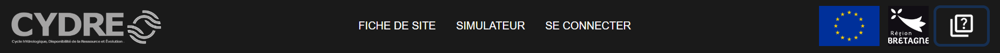
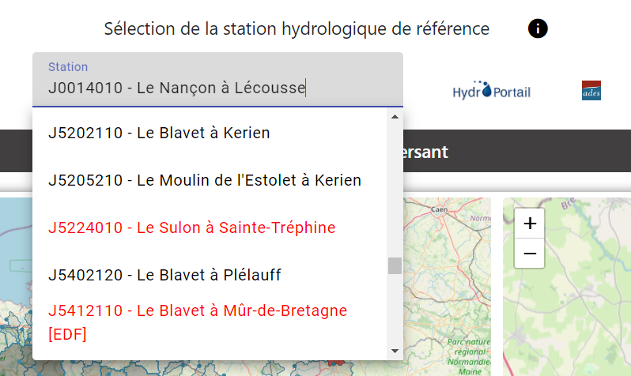
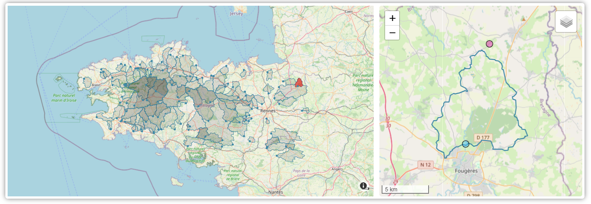
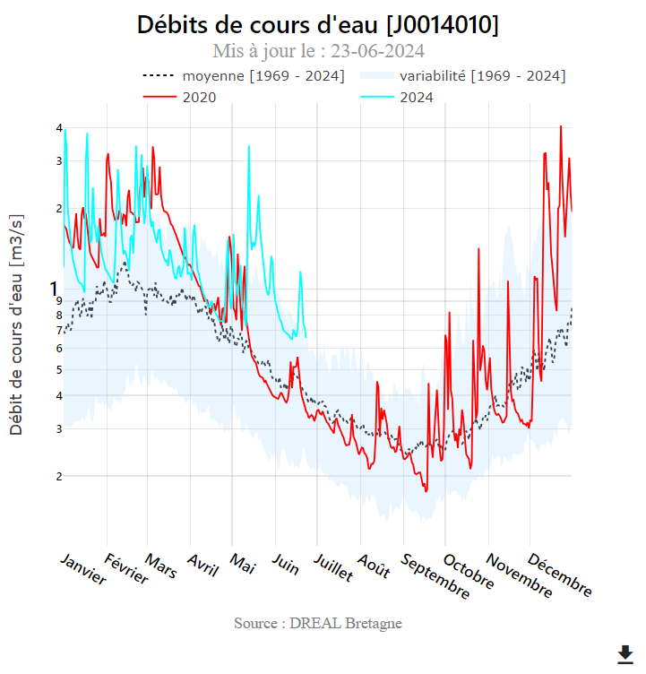
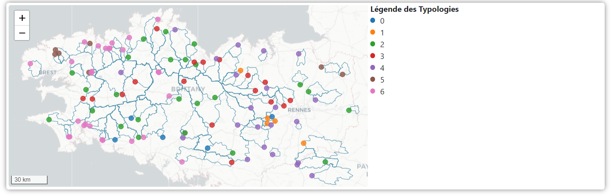
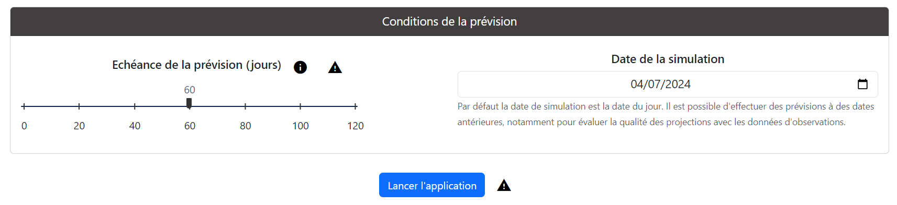
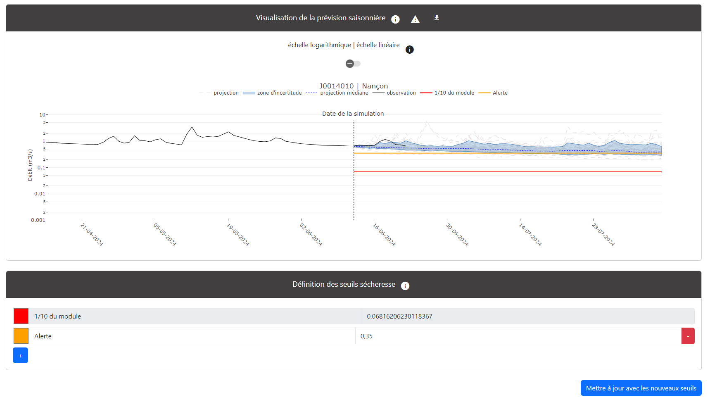
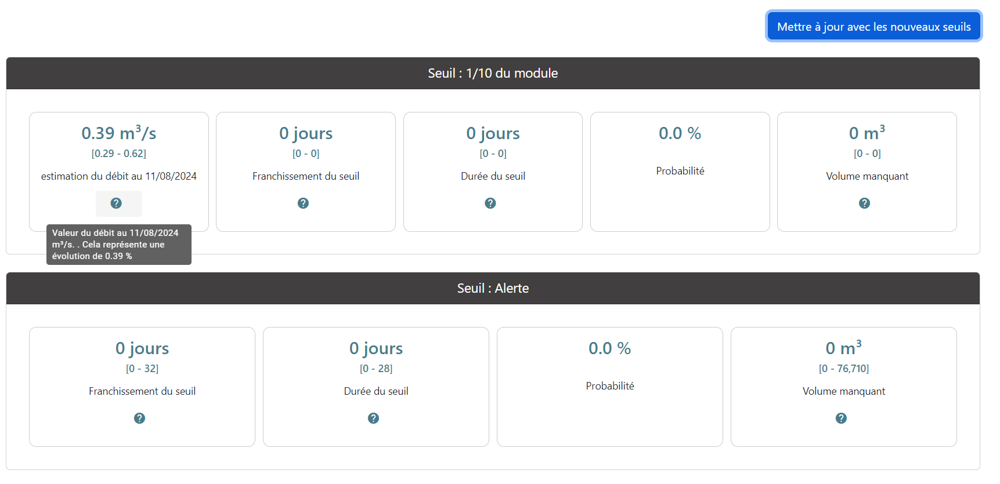
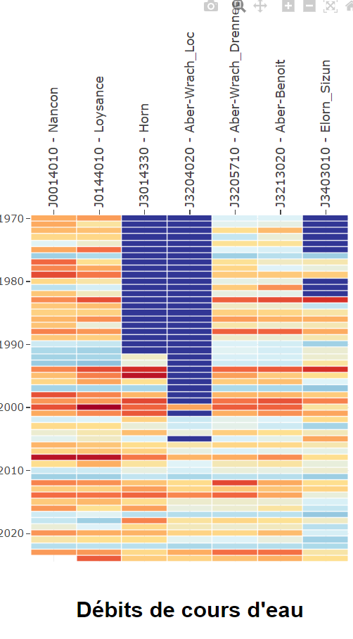

Le projet CYDRE (Cycle hYdrologique, Disponibilité de la Ressource et Évolution), initié début 2023, avait pour objectif de développer un outil opérationnel de prévision des débits de cours d’eau, en libre accès sur le web, à destination des acteurs de l'eau de la région Bretagne.
Cet outil fournit des tendances de l’évolution des débits à une échéance de quelques semaines à quelques mois avec une utilisation privilégiée sur la période d’étiage. Le modèle de prévision est dit statistique, basé sur l’analyse des données historiques de climat (évapotranspiration, pluviométrie), de débits et de profondeur de nappe.
L’onglet « Méthodologie » précise la façon dont sont obtenues les prévisions saisonnières de débits. Un guide utilisateur est aussi intégré (onglet « Guide d’utilisation ») pour faciliter la prise en main.
Télécharger l'ensemble de la documentation au format pdf.
Introduction
L'application web est organisée en deux onglets principaux : 1) Une fiche de site sous la forme d’un tableau de bord des données utilisées pour la prévision; 2) un simulateur pour générer des tendances saisonnières de débits pour la station hydrologique sélectionnée.
Sélection de la station hydrologique
La sélection de la station hydrologique est commune aux deux onglets. En effet, l’ensemble du projet est réalisé à l’échelle des bassins versants, délimités à partir des stations hydrologiques considérées comme leur exutoire. La sélection d’une station hydrologique va définir l’affichage de la fiche de site correspondant au bassin versant et va indiquer au simulateur le bassin versant pour lequel nous souhaitons générer des prévisions de débits.
Sélectionner une station hydrologique dans la liste déroulante en haut de l’écran. Il est également possible de sélectionner la station directement sur la carte à l'échelle régionale en cliquant sur les points correspondants aux stations hydrologiques. Chaque station est indiquée à partir de son identifiant et du nom réel de la station telles que ces informations sont indiquées sur la plateforme HydroPortail.
Dans la liste déroulante, les stations sont affichées de différentes façons :
- Les stations indiquées en noir sont accessibles à la fois pour la visualisation des données sur la fiche de site ainsi que pour la réalisation de prévisions saisonnières. Ce sont des stations considérées comme non ou peu influencées selon les informations transmises par la plateforme HydroPortail. Elles ont aussi fait l'objet de travaux de modélisation pour qualifier le milieu souterrain et sa contribution au débit des cours d'eau.
- Les stations indiquées en rouge ne sont accessibles que pour la visualisation sous forme de fiche de site. La prévision des débits n'est pas possible car ce sont soit des stations influencées par la présence en amont de barrage ou par des prélèvements trop importants; soit des stations qui n’ont pas encore fait l’objet de travaux de modélisation nécessaires pour la réalisation des prévisions saisonnières.
Fiche de site
La fiche de site est un tableau de bord présentant des éléments de compréhension de l'état de la ressource en eau d'un bassin versant. Elle présente la localisation du bassin versant, l'association d'une station piézométrique à un bassin, les dynamiques climatiques, hydrologiques et hydrogéologiques ainsi qu'une vision régionale des propriétés hydrogéologiques des bassins versants.
Localisation (à compléter)
Dynamiques temporelles
Propriétés hydrogéologiques
Simulateur
Conditions de la prévision
Visualisation de la prévision
Indicateurs opérationnels
Analyse de similarité
à venir prochainement...
Le projet CYDRE est porté par le CNRS et le BRGM. Après avoir animé l’émergence du projet, le Creseb reste un partenaire privilégié pour l’élaboration et la mise en œuvre des activités de diffusion ou d’appropriation des résultats du projet. Le projet est cofinancé par l’Union européenne, la Région Bretagne, le CNRS et le BRGM.